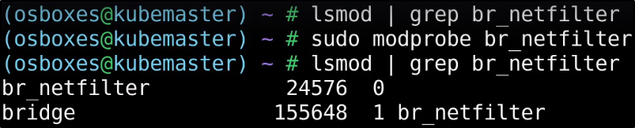

Demo - Provision cluster using Kubeadm
Link:
https://kubernetes.io/docs/setup/production-environment/tools/kubeadm/install-kubeadm/
Su ogni nodo, sempre seguendo la linea:
dobbiamo configurare IPTABLES.
Prima controlliamo se vi è il netfiler e lo attiviamo se non vi è.

Sempre su tutti i nodi: carichiamo l'IPTABLE:

Link: https://docs.docker.com/engine/install/#server
Sempre su tutti i nodi:
Prossimo step: installare il Runtime Container, nel nostro caso Docker.


Ora controlliamo lo status di Docker:

Installiamo questi tools su tutte le macchine:


ORa va configurato il cdriver usato da kubelet, sul control-panel node.
Se usi Docker, puoi saltare questa parte.
Ora settiamo kubeadm:
https://kubernetes.io/docs/setup/production-environment/tools/kubeadm/create-cluster-kubeadm/
Come primo punto: inizializziamo il control pane node.
Passiamo direttamente alla parte dove aggiungiamo la "POD Network".
Qui dobbiamo definire l'IP Range da usare per i POD.

Nel nostro caso, useremo Weave Net.
Il 3 step se usiamo docker è saltabile.
SOLO SUL WORKER NODE.
Ora settiamo la rete dei POD col primo parametro,
ed un indirizzo statico del Master Node col secondo.


Una volta installata, ci chiederà di fare delle azioni come regular user:

Abbiamo deciso di usare Weave Net.
Non ci resta che far accedere i Worker Node sotto il Master Node.
Eseguiamo questo sul master:

Scegliamo la sezione di Weave Net.


Copiamo questo comando anche sugli altri nodi: